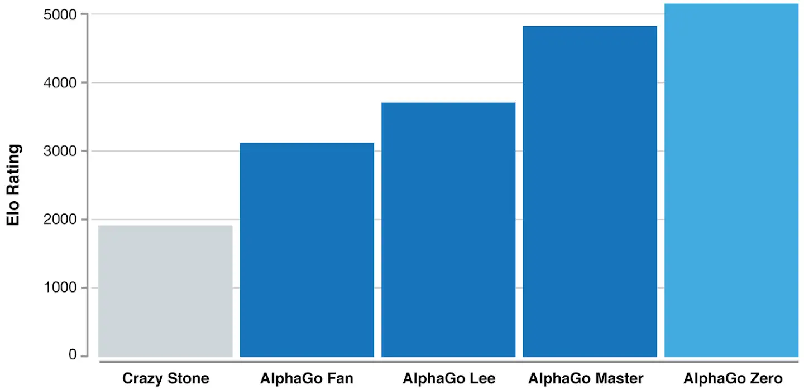

What's Behind AlphaGo?
So how did AlphaGo solve the complexity of Go as well as the restriction imposed by the game level of the designers? All previous methods for Go-playing AI relied on some kind of game tree search, combined with hand-crafted rules. AlphaGo, however, makes extensive use of machine learning to avoid using hand-crafted rules and improve efficiency.
Machine learning is a type of artificial intelligence that provides computers with the ability to learn without being explicitly programmed. It focuses on the development of computer programs that can teach themselves to grow and change when exposed to new data. The machine learning systems search through data to look for patterns.
So AlphaGo uses deep learning and neural networks to teach itself to play. AlphaGo’s intelligence is based on it having been shown millions of Go positions and moves from human-played games. No wonder the world's best players have no chance to beat it.
Neural Networks
Generally, two main kinds of neural networks inside AlphaGo are trained: policy network and value network. Both types of networks take the current game state as input and grade each possible next move through different formulas and output the probability of a win.
On one side, the value network provides an estimate of the value of the current state of the game: what is the probability of the black player to ultimately win the game, given the current state? The output of the value network is the probability of a win. On the other side, the policy networks provide guidance regarding which action to choose, given the current state of the game. The output is a probability value for each possible legal move (the output of the network is as large as the board). Actions (moves) with higher probability values correspond to actions that have a higher chance of leading to a win.
In general, the combined two neural networks let AlphaGo avoid doing excess work: the policy network focuses on the present and decides the next step to save time on searching the entire game tree, and the value network focuses on the long run, analyzing the whole situation to reduce possible moves in the game tree. AlphaGo then averages the suggestion from two networks to make a final decision. By playing against itself, AlphaGo automatically became stronger and stronger at Go.

AlphaGo Zero
Despite AlphaGo's success, the reseach team has not given up on further improvements. Previous generations of AlphaGo trained itself based on the moves of human players, but the latest iteration of AlphaGo Zero goes beyond that. By using a novel form of reinforcement learning, in which AlphaGo Zero becomes its own teacher. The system starts off with a neural network that knows nothing about the game of Go. It then plays games against itself, by combining this neural network with a powerful search algorithm. As it plays, the neural network is tuned and updated to predict moves, as well as the eventual winner of the games.
This updated neural network is then recombined with the search algorithm to create a new, stronger version of AlphaGo Zero, and the process begins again. In each iteration, the performance of the system improves by a small amount, and the quality of the self-play games increases, leading to more and more accurate neural networks and ever stronger versions of AlphaGo Zero.
This technique is more powerful than previous versions of AlphaGo because it is no longer constrained by the limits of human knowledge. Instead, it is able to learn from the strongest player in the world: AlphaGo itself.

After just three days of self-play training, AlphaGo Zero emphatically defeated the previously published version of AlphaGo - which had itself defeated 18-time world champion Lee Sedol - by 100 games to 0. After 40 days of self training, AlphaGo Zero became even stronger, outperforming the version of AlphaGo known as “Master”, which has defeated the world's best players and world number one Ke Jie.
ELO Rating is a measure of a player's Go ability. The latest generation of AlphaGo had at least a 5000 Elo rating while the best human professional player is around 3700. So far, AlphaGo Zero has become a god in the field of Go. The world's best professionals are as vulnerable to it as amateurs are to professionals.